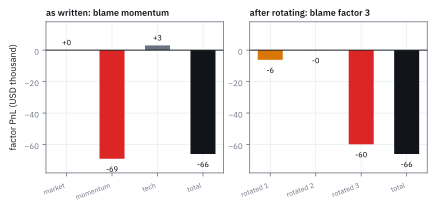
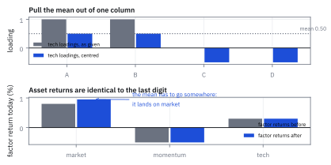
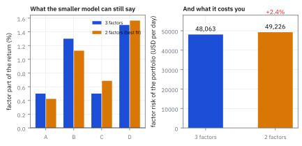
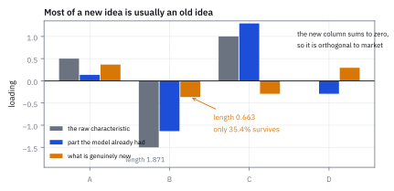

26.3 Rotations, Projections, and Push-Outs
แบบจำลองเดียวกัน เขียนได้หลายแบบ และบางแบบโกหกเรื่องว่าใครทำเงิน
พอร์ตหนึ่งขาดทุน \$66,000 จาก factor รายงานบอกว่า momentum ทำเสีย \$69,000 แต่พอเขียนแบบจำลองเดียวกันในอีกรูปแบบ รายงานบอกว่า momentum เสียแค่ \$21 ทั้งสองถูกได้อย่างไร?
เฉลย: ได้ เพราะทั้งสองรูปแบบทำนายทุกอย่างที่วัดได้เหมือนกันเป๊ะ ผลตอบแทนหุ้นทุกตัวเท่ากัน ความเสี่ยงรวมเท่ากันที่ \$48,063 และ PnL รวมเท่ากันที่ −\$66,000 สิ่งที่ไม่เท่ากันคือการแบ่งว่า factor ไหนรับผิดชอบเท่าไร เพราะ factor model ไม่ได้ถูกกำหนดแบบเดียว และการเลือกรูปแบบคือการเลือกว่าจะเล่าเรื่องอย่างไร
ศัพท์ที่ใช้ในหัวข้อนี้
- rotational indeterminacy
- ข้อเท็จจริงที่ factor model เขียนได้หลายรูปแบบซึ่งทำนายเหมือนกันทุกอย่าง ใช้เป็นเสรีภาพในการจัดรูปแบบจำลองให้อ่านง่าย
- rotation
- การเปลี่ยน loading และ factor return พร้อมกันด้วย matrix ที่ผกผันได้ ใช้ได้โดยจำนวน factor ไม่เปลี่ยน
- projection
- การลดจำนวน factor ลงโดยหาแบบจำลองเล็กที่ใกล้ของเดิมที่สุด ใช้ทำรุ่นย่อให้ผู้ใช้ปลายทาง
- push-out
- การเพิ่ม factor เข้าไปในแบบจำลองเดิมโดยไม่ต้องประมาณใหม่ทั้งหมด ใช้เวลามีคุณสมบัติใหม่ที่อยากทดสอบ
- idempotent
- สมบัติที่ทำซ้ำแล้วได้ผลเดิม ใช้เป็นเครื่องหมายว่าตัวดำเนินการนั้นเป็นการฉาย
- singular value decomposition (SVD)
- การแยก matrix เป็นการหมุน การยืด และการหมุนอีกครั้ง ใช้สร้าง matrix รากที่สองและตัวผกผันในหัวข้อนี้
- whitening
- การแปลงให้ตัวแปรมี variance เป็นหนึ่งและไม่สัมพันธ์กัน ใช้ทำให้ความเสี่ยงรวมเป็นแค่ผลบวกกำลังสอง
- orthonormal
- คอลัมน์ที่ยาวหนึ่งหน่วยและตั้งฉากกันทุกคู่ ใช้เป็นรูปแบบที่คำนวณง่ายที่สุด
- z-scoring
- การเลื่อนและย่อขยาย loading ให้ค่าเฉลี่ยเป็นศูนย์และความผันผวนเป็นหนึ่ง ใช้ให้ exposure อ่านเทียบกันได้
- country factor
- factor ที่ทุกหุ้นในประเทศนั้นมี loading เท่ากับ 1 ใช้เป็นจุดตัด และเป็นเงื่อนไขที่ทำให้ z-scoring ไม่เปลี่ยนแบบจำลอง
- orthogonalization
- การเอาส่วนที่ซ้ำกับของเดิมออกจากคุณสมบัติใหม่ ใช้ก่อนเพิ่ม factor เข้าแบบจำลอง
- performance attribution
- การไล่ว่ากำไรขาดทุนมาจากไหน ใช้เป็นสิ่งที่ได้รับผลกระทบจากการเลือกรูปแบบมากที่สุด
- nested model
- แบบจำลองที่ factor ของมันเป็นชุดย่อยของอีกแบบจำลองหนึ่ง ใช้เป็นกรณีที่พบบ่อยที่สุดของ projection
สัญลักษณ์ที่ใช้ในหัวข้อนี้
| สัญลักษณ์ | ความหมาย | หน่วย |
|---|---|---|
| $\mathbf B,\ \tilde{\mathbf B}$ | loadings matrix เดิม และหลังแปลง | unitless |
| $\mathbf f,\ \tilde{\mathbf f}$ | factor return เดิม และหลังแปลง | decimal |
| $\mathbf C$ | matrix ผกผันได้ที่ใช้แปลง ขนาด $m\times m$ | unitless |
| $\mathbf A$ | loadings matrix ของแบบจำลองที่เล็กลง ขนาด $n\times p$ | unitless |
| $\mathbf H$ | ตัวแปลงจาก factor เดิมไปเป็น factor ของแบบจำลองย่อ | unitless |
| $\mathbf g$ | factor return ของแบบจำลองย่อ | decimal |
| $\mathbf e$ | vector ที่ทุกตัวเป็นหนึ่ง | unitless |
| $\boldsymbol\nu$ | ค่าคงที่ที่จะบวกเข้าไปในแต่ละคอลัมน์ของ loading | unitless |
| $\mathbf b$ | factor exposure ของพอร์ต | USD |
| $\boldsymbol\Omega_f$ | covariance matrix ของ factor return | decimal² |
| $m,\ p$ | จำนวน factor เดิม และของแบบจำลองย่อ | จำนวน |
โจทย์: แบบจำลองเดียวกัน สี่หน้าตา
โจทย์ให้อะไรมาบ้าง ใช้แบบจำลองเดียวกับหัวข้อ 26.1 ทุกอย่าง หุ้นสี่ตัว factor สามตัวคือ market momentum tech factor return ของวันนี้คือ 0.80% −0.50% 0.30% factor volatility รายวันคือ 1.00% 0.35% 0.55% correlation คือ market กับ momentum −0.20 market กับ tech +0.50 momentum กับ tech −0.10 และพอร์ตคือ A \$3 ล้าน B −\$2 ล้าน C \$4 ล้าน D −\$5 ล้าน ซึ่งมี exposure เป็น 0, 13.8, 1
ต้องหาสี่อย่าง รูปแบบที่ทำให้ factor ไม่สัมพันธ์กันและมี variance เป็นหนึ่ง รูปแบบที่ทำให้คอลัมน์ tech มีค่าเฉลี่ยเป็นศูนย์ แบบจำลองสอง factor ที่ใกล้ของเดิมที่สุด และวิธีเพิ่ม factor ที่สี่โดยไม่ต้องประมาณใหม่
ขั้นที่ 1 — การหมุน: ทำไมถึงทำได้เลย
นี่เป็นเพียงการเขียนใหม่ ไม่ใช่สมมติฐานใหม่ แทรกคู่ของ matrix ที่คูณกันได้เอกลักษณ์เข้าไประหว่าง $\mathbf B$ กับ $\mathbf f$ แล้วจับกลุ่มใหม่
บรรทัดสุดท้ายคือสิ่งที่รับประกันว่าการหมุนปลอดภัย ความเสี่ยงรวมจาก factor ไม่ขยับเลย เพราะ $\mathbf C^{-1}$ กับ $\mathbf C$ ตัดกันหมด ความเสี่ยงจาก idiosyncratic ก็ไม่ขยับ เพราะการหมุนไม่ได้แตะมันเลย
สิ่งที่ขยับคือ exposure และการแบ่งความเสี่ยงรายตัว และนั่นคือทั้งประโยชน์และอันตรายของเครื่องมือนี้
ขั้นที่ 2 — หมุนให้ factor เป็นอิสระและมี variance เป็นหนึ่ง
เลือก $\mathbf C$ จาก SVD ของ covariance matrix ของ factor ให้ผลลัพธ์เป็นเอกลักษณ์ นี่คือการ whitening แทนค่าแล้วดูว่าเกิดอะไรขึ้นกับพอร์ตในโจทย์
ในรูปแบบนี้ ความเสี่ยงจาก factor คือผลบวกกำลังสองของ exposure ตรง ๆ ไม่มีพจน์ไขว้ให้คิดเลย ผู้ใช้อ่าน exposure แล้วเห็นความเสี่ยงทันที ซึ่งเป็นเหตุผลที่ผู้ให้บริการบางเจ้าเสนอมุมมองนี้ให้ลูกค้า
ตรวจเองใน 10 วินาที 0.0073² + 0.0076² + 0.0469² = 0.0000533 + 0.0000578 + 0.0021996 = 0.0023101 ตรงกับ 2.31001 × 10⁻³ พอดี และถอดรากคูณล้านได้ \$48,063 เท่ากับที่หัวข้อ 26.1 คำนวณไว้
ขั้นที่ 3 — สิ่งที่คงที่ กับสิ่งที่ไม่
เอา PnL จาก factor ในหัวข้อ 26.1 มาแบ่งใหม่ในสองรูปแบบ แล้ววางเทียบกัน ทั้งสองรูปแบบทำนายผลตอบแทนหุ้นทุกตัวเหมือนกัน และให้ PnL รวมเท่ากัน
ทั้งสองแถวถูกต้องทั้งคู่ และนี่คือเหตุผลที่คำถามว่า “PnL นี้มาจาก factor ไหน” ไม่มีคำตอบเดียวจนกว่าจะระบุรูปแบบ
อย่าเพิ่งมองว่าเป็นข้อเสีย มันคือเสรีภาพ เราเลือกรูปแบบที่ทำให้ factor กลุ่มที่สนใจรับ PnL ไปให้มากที่สุดได้ ซึ่งเป็นเทคนิคที่หัวข้อ 32.4 จะใช้เป็นเครื่องมือหลัก
บนโต๊ะจริง กฎที่ใช้คือ เลือกรูปแบบหนึ่งแล้วอยู่กับมัน เปลี่ยนรูปแบบกลางปีแล้วเทียบผลงานข้ามช่วง คือการเทียบสิ่งที่เทียบกันไม่ได้
Figure 26.3a — ความเสี่ยงรวมและ PnL รวมไม่ขยับ แต่การแบ่งรายตัวเปลี่ยนทั้งหมด

แผงซ้ายคือ PnL แบ่งตาม factor ในรูปแบบเดิม ซึ่งชี้ไปที่ momentum แผงขวาคือแบบจำลองเดียวกันหลังหมุนให้ factor เป็นอิสระ ซึ่งชี้ไปที่ factor ที่สาม แท่งรวมทางขวาของทั้งสองแผงเท่ากันที่ −\$66,000 และความเสี่ยงรวมเท่ากันที่ \$48,063
ขั้นที่ 4 — z-scoring ทำได้เมื่อไร และเปลี่ยนอะไร
อยากให้คอลัมน์ tech มีค่าเฉลี่ยเป็นศูนย์แทนที่จะเป็น 0 กับ 1 การบวกค่าคงที่เข้าไปในคอลัมน์คือการเติม $\mathbf e\boldsymbol\nu^{\mathsf T}$ ซึ่งจะเป็นการหมุนได้ก็ต่อเมื่อ $\mathbf e$ เขียนเป็นผลรวมของคอลัมน์เดิมได้ ในแบบจำลองนี้ได้ เพราะคอลัมน์แรกคือ $\mathbf e$ พอดี
สิ่งที่เกิดขึ้นอ่านได้ตรง ๆ เดิมคอลัมน์ tech มีค่าเฉลี่ย 0.5 ซึ่งแปลว่ามันแอบพก “ครึ่งหนึ่งของทุกคน” ไว้ในตัว พอดึงค่าเฉลี่ยออก ครึ่งนั้นต้องไปอยู่ที่ไหนสักแห่ง และมันไปอยู่ที่ market factor ซึ่งผลตอบแทนขยับจาก 0.80% เป็น 0.95%
ผลตอบแทนหุ้นทุกตัวไม่ขยับ exposure ของพอร์ตไม่ขยับ ความเสี่ยงรวมไม่ขยับ สิ่งที่ขยับคือความหมายของคำว่า market ในรายงาน
เงื่อนไขในบรรทัดแรกสำคัญมาก ถ้าแบบจำลองไม่มี market factor และไม่มีชุด industry ที่รวมกันได้หนึ่ง การ z-score คอลัมน์จะ ไม่ใช่ การหมุน มันจะเป็นแบบจำลองคนละอันที่ทำนายความเสี่ยงต่างออกไปจริง ๆ
Figure 26.3b — ดึงค่าเฉลี่ยออกจากคอลัมน์หนึ่ง แล้วมันไปโผล่ที่ market

แผงบนคือคอลัมน์ tech ก่อนและหลังดึงค่าเฉลี่ยออก แผงล่างคือ factor return ทั้งสาม ก่อนและหลัง market ขยับจาก 0.80% เป็น 0.95% ขณะที่อีกสองตัวไม่ขยับ ผลตอบแทนของหุ้นทั้งสี่ตัวเท่าเดิมทุกหลัก
แล้วเอาไปใช้ทำอะไรได้จริงบ้าง
สองแบบแรกไม่เปลี่ยนจำนวน factor อีกสองแบบเปลี่ยน และทั้งคู่ตอบโจทย์จริงบนโต๊ะ
การย่อใช้เมื่อผู้ใช้ปลายทางไม่ต้องการรายละเอียดทั้งร้อย factor หรือเมื่อ factor บางตัวมี loading ที่ขยับเร็วจนเทรดตามไม่ไหว หรือเมื่อใช้แบบจำลองของผู้ให้บริการแล้วเชื่อว่า factor บางตัวไม่ควรอยู่ในนั้น
การขยายใช้เมื่อมีคุณสมบัติใหม่ที่อยากทดสอบ ซึ่งเป็นงานประจำวันของนักวิจัยสัญญาณ และเป็นสิ่งที่หัวข้อ 30.3 จะทำเต็มกระบวนการ
ขั้นที่ 5 — การย่อ: สาม factor เหลือสอง
อยากได้แบบจำลองที่มีแค่ market กับ momentum แต่ให้ใกล้ของเดิมที่สุด วัดความใกล้ด้วยระยะห่างกำลังสองระหว่างส่วนที่ factor อธิบายของทั้งสองแบบจำลอง ปัญหานี้คือ least squares ธรรมดา
อ่าน $\mathbf H$ แล้วเห็นเรื่องทั้งหมด แถวแรกบอกว่า market ตัวใหม่คือ market ตัวเก่าบวกครึ่งหนึ่งของ tech ซึ่งสมเหตุสมผล เพราะครึ่งหนึ่งของหุ้นอยู่ใน tech แถวที่สองบอกว่า momentum ตัวใหม่ดูดเอา 0.204 ของ tech เข้าไป เพราะในตัวอย่างนี้หุ้น tech บังเอิญมี momentum สูงกว่าค่าเฉลี่ย
ราคาที่จ่ายคือความเสี่ยงที่รายงานคลาดไป 2.4% แบบจำลองย่อรายงาน \$49,226 ขณะที่แบบจำลองเต็มรายงาน \$48,063 ในกรณีนี้มันสูงเกินจริง ซึ่งเป็นทิศที่ปลอดภัยกว่า แต่ไม่ได้รับประกันว่าจะเป็นทิศนี้เสมอ
ชื่อว่า projection เพราะทำซ้ำแล้วได้เดิม ฉายลงบนระนาบแล้วฉายอีกที จุดไม่ขยับ เพราะมันอยู่บนระนาบนั้นแล้ว
Figure 26.3c — ย่อจากสาม factor เหลือสอง และราคาที่จ่าย

แผงซ้ายคือส่วนที่ factor อธิบายได้ของหุ้นทั้งสี่ตัว จากแบบจำลองเต็มกับแบบจำลองย่อ ซึ่งใกล้กันแต่ไม่เท่ากัน ช่องว่างคือส่วนที่การย่อทิ้งไป แผงขวาคือความเสี่ยงของพอร์ตที่แต่ละแบบจำลองรายงาน ต่างกัน 2.4%
ขั้นที่ 6 — การขยาย: เพิ่ม factor โดยไม่รื้อของเดิม
มีคุณสมบัติใหม่มาหนึ่งชุด อยากใส่เป็น factor ที่สี่ ถ้าใส่ดิบ ๆ factor return ของสามตัวเดิมจะเปลี่ยนหมดและรายงานทั้งหลังบ้านจะเปลี่ยนตาม ทางแก้คือดึงส่วนที่ซ้ำกับของเดิมออกก่อน เหลือแต่ส่วนที่ตั้งฉาก ซึ่งเป็นการฉายแบบเดียวกับหัวข้อ 26.2
ตัวเลข 35.4% คือสิ่งที่ควรดูก่อนตื่นเต้นกับคุณสมบัติใหม่ทุกครั้ง 64.6% ของสิ่งที่คิดว่าค้นพบ อยู่ในแบบจำลองอยู่แล้ว สิ่งที่ใหม่จริงคือหนึ่งในสาม
เงื่อนไข $\mathbf A^{\mathsf T}\mathbf B=\mathbf 0$ ไม่ใช่เรื่องความสวยงาม ถ้าไม่ทำแบบนี้ factor ใหม่จะแย่งความหมายจาก factor เดิม และ factor return ของสามตัวเก่าจะไม่ใช่ตัวเลขเดิมอีกต่อไป รายงานผลงานย้อนหลังทั้งหมดจะเปลี่ยน ซึ่งเป็นสิ่งที่ไม่มีใครอยากอธิบายให้ลูกค้าฟัง
ตรวจเองใน 10 วินาที ผลรวมของ $\mathbf b_{m+1}$ ต้องเป็นศูนย์ เพราะมันตั้งฉากกับคอลัมน์ market ที่เป็นหนึ่งทั้งหมด 0.3659 − 0.3659 − 0.2927 + 0.2927 = 0 ✓
Figure 26.3d — คุณสมบัติใหม่ มีส่วนที่ใหม่จริงเท่าไร

แท่งซ้ายคือคุณสมบัติดิบของหุ้นทั้งสี่ตัว แท่งกลางคือส่วนที่แบบจำลองเดิมอธิบายได้อยู่แล้ว แท่งขวาคือส่วนที่เหลือซึ่งคือ factor ใหม่จริง ๆ ความยาวของมันเหลือแค่ 35.4% ของเดิม และผลรวมของมันเป็นศูนย์พอดี
กับดัก: เทียบ attribution ข้ามรูปแบบ และ z-score โดยไม่มี market factor
กับดักแรกและที่แพงที่สุดคือเปลี่ยนรูปแบบของแบบจำลองระหว่างปี แล้วเอารายงานผลงานก่อนและหลังมาเทียบกัน ขั้นที่ 3 แสดงว่าตัวเลขรายตัวเปลี่ยนได้จาก −\$69,000 เป็น −\$21 บน factor เดียวกัน โดยที่ไม่มีอะไรในโลกจริงเปลี่ยนเลย ผู้จัดการกองทุนที่เห็นตัวเลขนี้จะสรุปผิดเรื่องฝีมือตัวเอง
กับดักที่สองคือ z-score คอลัมน์โดยไม่ตรวจเงื่อนไขก่อน ถ้าแบบจำลองไม่มี market factor และไม่มีชุด industry ที่รวมกันได้หนึ่งในทุกแถว การเลื่อนค่าเฉลี่ยจะไม่ใช่การหมุน มันจะเป็นแบบจำลองคนละอันที่ให้ความเสี่ยงต่างกันจริง ๆ และไม่มีใครสังเกตเห็นเพราะตัวเลขยังดูสมเหตุสมผล
กับดักที่สามคือคิดว่าการย่อแบบจำลองรายงานความเสี่ยงต่ำกว่าเสมอ สัญชาตญาณบอกว่า factor น้อยลงต้องเห็นความเสี่ยงน้อยลง แต่ในตัวอย่างนี้มันรายงานสูงขึ้น 2.4% เพราะ exposure ที่ถูกตัดถูกพับเข้าไปใน factor ที่เหลือซึ่งมีความผันผวนสูงกว่า ทิศทางของความคลาดเคลื่อนขึ้นกับโครงสร้างของแต่ละกรณี ต้องวัดเอาทุกครั้ง
ที่มาที่ไป: แบบจำลองเดียว หลายหน้าตา
ในหัวข้อ 26.1 เราเขียน $\mathbf r=\boldsymbol\alpha+\mathbf B\mathbf f+\boldsymbol\epsilon$ ราวกับว่า $\mathbf B$ กับ $\mathbf f$ เป็นของที่มีอยู่จริงในธรรมชาติ แต่ถ้าแทรกคู่ของ matrix ที่ผกผันกันเข้าไปตรงกลาง ผลคูณไม่เปลี่ยน สิ่งที่เปลี่ยนคือชื่อของสิ่งที่เราเรียกว่า factor
เรื่องนี้ไม่ใช่ข้อบกพร่อง มันเป็นเสรีภาพ และเป็นเสรีภาพที่ใช้ได้จริงสามแบบ หมุนให้อ่านง่ายขึ้นโดยจำนวน factor เท่าเดิม ย่อให้เล็กลงเมื่อผู้ใช้ไม่ต้องการรายละเอียดทั้งหมด และขยายเมื่อมีของใหม่ที่อยากทดสอบ
แต่มันมีราคา บางอย่างที่คนเชื่อว่าเป็นข้อเท็จจริงของโลก เช่น “PnL ก้อนนี้มาจาก momentum” ที่จริงเป็นผลของรูปแบบที่เลือกเขียน หัวข้อนี้จะแยกให้ชัดว่าอะไรคงที่และอะไรไม่
ข้อจำกัด: สามการแปลง เมื่อไรใช้อันไหน
| การแปลง | จำนวน factor | อะไรคงที่ | ใช้เมื่อไร |
|---|---|---|---|
| rotation | เท่าเดิม | ผลตอบแทน ความเสี่ยงรวม PnL รวม | อยากให้ผู้ใช้อ่านง่าย หรืออยากผลักการอธิบายไปที่ factor กลุ่มหนึ่ง |
| projection | น้อยลง | ไม่มีอะไรคงที่เป๊ะ แต่ใกล้ที่สุดในความหมายกำลังสอง | ทำรุ่นย่อ ตัด factor ที่เทรดตามไม่ไหว หรือที่ไม่เชื่อ |
| push-out | มากขึ้น | factor return ของตัวเดิมทุกตัว | ทดสอบคุณสมบัติใหม่โดยไม่รื้อรายงานย้อนหลัง |
| z-scoring | เท่าเดิม | ทุกอย่างที่วัดได้ ถ้ามี market factor | ทำให้ exposure อ่านเทียบกันได้ระหว่าง factor |
แถวที่สามคือเหตุผลที่ push-out เป็นงานประจำวัน มันเพิ่มของใหม่ได้โดยไม่กระทบตัวเลขเก่าเลยแม้แต่หลักเดียว ซึ่งเป็นคุณสมบัติที่หายากและมีค่ามากในระบบที่ต้องรายงานย้อนหลัง
ตรวจทุกการแปลงในหัวข้อนี้
import numpy as np
B = np.array([[1, 1.2, 1], [1, -0.4, 1], [1, 0.6, 0], [1, -1.4, 0]], float)
f = np.array([0.008, -0.005, 0.003])
w = np.array([3.0, -2.0, 4.0, -5.0])
sf = np.array([0.010, 0.0035, 0.0055])
Of = np.outer(sf, sf) * np.array([[1, -.20, .50], [-.20, 1, -.10], [.50, -.10, 1]])
b = B.T @ w
base_var, base_pnl = b @ Of @ b, b @ f
# step 2: whiten the factors
U, S, _ = np.linalg.svd(Of)
C = np.diag(S ** -0.5) @ U.T
Bt, ft, Oft = B @ np.linalg.inv(C), C @ f, C @ Of @ C.T
assert np.allclose(Oft, np.eye(3), atol=1e-12) # identity covariance
assert np.allclose(Bt @ ft, B @ f) # same asset returns
bt = Bt.T @ w
assert np.allclose(np.abs(bt), [0.0073, 0.0076, 0.0469], atol=5e-5)
assert abs(bt @ bt - base_var) < 1e-15 # risk is now a plain sum of squares
assert abs(np.sqrt(base_var) * 1e6 - 48_063) < 1
# step 3: the total survives, the split does not
assert abs(bt @ ft - base_pnl) < 1e-15
assert abs(base_pnl * 1e6 - (-66_000)) < 1e-6
assert np.allclose(b * f * 1e6, [0, -69_000, 3_000], atol=1e-6)
assert np.allclose(bt * ft * 1e6, [-6_157, -21, -59_823], atol=1)
assert not np.allclose(b * f, bt * ft) # the story changed completely
# step 4: centring a column is a rotation only because column 1 is all ones
a, nu = np.array([1.0, 0, 0]), np.array([0.0, 0, -0.5])
assert np.allclose(B @ a, np.ones(4)) # the condition that makes it legal
Cinv = np.eye(3) + np.outer(a, nu)
C2 = np.linalg.inv(Cinv)
B2, f2 = B @ Cinv, C2 @ f
assert np.allclose(B2[:, 2], [0.5, 0.5, -0.5, -0.5]) # tech is now centred
assert abs(B2[:, 2].mean()) < 1e-15
assert np.allclose(B2 @ f2, B @ f) # same returns
assert abs(f2[0] * 100 - 0.95) < 1e-12 # market absorbed the mean
assert np.allclose(B2.T @ w, b) # exposures unchanged
assert abs((B2.T @ w) @ (C2 @ Of @ C2.T) @ (B2.T @ w) - base_var) < 1e-15
# step 5: project down to two factors
A = B[:, :2]
H = np.linalg.inv(A.T @ A) @ A.T @ B
assert np.allclose(H, [[1, 0, 0.5], [0, 1, 0.204082]], atol=1e-6)
g, Og = H @ f, H @ Of @ H.T
assert np.allclose(g * 100, [0.9500, -0.4388], atol=5e-5)
resid = np.linalg.norm(B @ f - A @ g)
assert all(resid <= np.linalg.norm(B @ f - A @ (g + d)) + 1e-15 # g really is the best
for d in (np.array([1e-4, 0]), np.array([0, 1e-4]), np.array([-1e-4, 1e-4])))
bA = A.T @ w
assert abs(np.sqrt(bA @ Og @ bA) * 1e6 - 49_226) < 1
assert abs(np.sqrt(bA @ Og @ bA) / np.sqrt(base_var) - 1 - 0.0242) < 1e-4
Pr = A @ np.linalg.inv(A.T @ A) @ A.T
assert np.allclose(Pr @ Pr, Pr) # idempotent: it is a projection
# step 6: push out a new characteristic
raw = np.array([0.5, -1.5, 1.0, 0.0])
new = (np.eye(4) - B @ np.linalg.pinv(B)) @ raw
assert np.allclose(new, [0.365854, -0.365854, -0.292683, 0.292683], atol=1e-6)
assert np.allclose(B.T @ new, 0, atol=1e-12) # orthogonal to every old column
assert abs(new.sum()) < 1e-12 # the 10-second check
assert abs(np.linalg.norm(new) / np.linalg.norm(raw) - 0.354) < 1e-3บล็อกของขั้นที่ 5 ไม่ได้เชื่อสูตร least squares แต่ลองขยับคำตอบไปสามทิศแล้วยืนยันว่าระยะห่างแย่ลงทุกครั้ง ส่วนบรรทัด idempotent ยืนยันว่าตัวดำเนินการนี้เป็นการฉายจริง ไม่ใช่แค่ชื่อเรียก
ก่อนไปต่อ
ตอนนี้เรารู้แล้วว่าความเสี่ยงรวมไม่ขึ้นกับรูปแบบที่เลือกเขียน แต่การแบ่งความเสี่ยงรายตัวขึ้นกับมัน คำถามถัดไปคือ เมื่อเลือกรูปแบบแล้ว จะแบ่งความเสี่ยงอย่างไรให้มีความหมาย และมีวิธีแบ่งกี่แบบ ปรากฏว่ามีสามแบบที่ใช้กันจริง และมันตอบคำถามคนละคำถาม
สรุปที่ใช้ได้จริง
- $\mathbf B\mathbf f=(\mathbf B\mathbf C^{-1})(\mathbf C\mathbf f)$ สำหรับ $\mathbf C$ ที่ผกผันได้ทุกตัว แบบจำลองจึงเขียนได้หลายรูปแบบที่ทำนายเหมือนกันทุกอย่างที่วัดได้
- คงที่เสมอคือ ผลตอบแทนหุ้น PnL รวม ความเสี่ยงรวมจาก factor และความเสี่ยงจาก idiosyncratic ไม่คงที่คือ exposure รายตัว PnL รายตัว และความเสี่ยงรายตัว ตัวอย่างในหัวข้อนี้ย้าย \$69,000 จาก momentum ไปยัง factor ที่สามโดยไม่มีอะไรจริงเปลี่ยน
- หมุนให้ covariance เป็นเอกลักษณ์ได้ด้วย SVD แล้วความเสี่ยงจาก factor กลายเป็นผลบวกกำลังสองของ exposure ตรง ๆ ไม่มีพจน์ไขว้
- z-scoring เป็นการหมุนได้ก็ต่อเมื่อ vector ที่เป็นหนึ่งทั้งหมดอยู่ในปริภูมิของคอลัมน์ คือมี market factor หรือมี industry ที่รวมกันได้หนึ่ง มิฉะนั้นมันคือแบบจำลองคนละอัน
- การย่อใช้ $\mathbf H=(\mathbf A^{\mathsf T}\mathbf A)^{-1}\mathbf A^{\mathsf T}\mathbf B$ ซึ่งในตัวอย่างนี้ทำให้ความเสี่ยงที่รายงานสูงขึ้น 2.4% ส่วนการขยายต้องดึงส่วนที่ซ้ำออกก่อน และในตัวอย่างนี้คุณสมบัติใหม่เหลือของใหม่จริงแค่ 35.4%